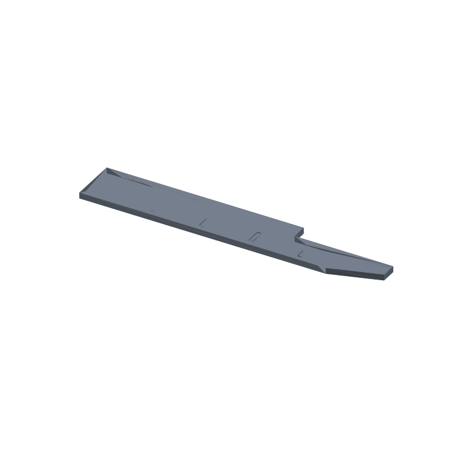

Step-top seed ruler plant marker STL, 5 spacing ticks, 150 × 24 × 3 mm
Row spacing by eye is how seedlings end up crowded: three weeks in, the bed is a canopy and the thinnings go to the compost. This stake is a flat 150 × 24 × 3 mm bar, the step-top sibling of our 3-bar plant marker stake and the wide 4-bar marker, that does two jobs at once. Lay it flat between rows and the tick centers along the lower strip read 25 mm spacing; stand it up and the blank upper face takes the plant name in paint pen.
The face is split into two zones. The lower strip carries 5 recessed ticks, each 2 × 8 mm and 0.6 mm deep, on a 25 mm pitch at x 10, 35, 60, 85 and 110, so the gaps between tick centers are exactly 25 mm and the strip reads like a ruler edge. The upper face stays bare plastic for the name. The top edge steps down 8 mm at x 100, which keeps the tall end where the name goes and drops the ground-end profile low, and the ground end bevels over the last 25 mm up to an 8 mm wide land instead of a stabbing point: hand pressure sets it, and it pulls back out for re-spacing.
This page carries the measured spec sheet: dimensions taken from the exported mesh, every edge counted, all 5 tick floors ray scanned, the width profile checked against the piecewise design at five stations, and the volume cross checked against an analytic sum, so you can check the numbers before you slice.

The STL is one material and prints in one color; the renders shade the faces by light angle so the ticks, the step in the top edge and the 3 mm thickness read as geometry, not paint.
Spec sheet, measured from the mesh
| Spec | Value |
|---|---|
| As exported | One connected flat stake 150 × 24 × 3 mm with 5 recessed spacing ticks on the lower face strip, a step in the top edge at x 100 and the ground end beveling to an 8 mm land |
| Spacing ticks | 5 rectangular pockets 2 × 8 mm, 0.6 mm deep (floor plane z 2.4), centers x 10 / 35 / 60 / 85 / 110 on a 25 mm pitch, y 7; blank recesses, no engraving anywhere |
| Measured floors | 5 of 5 tick centers first hit z 2.4 from above, open space above the floor, solid plastic below; measured depth 0.6 mm == design |
| Floor spans | Ray scan on a 0.25 mm grid reads 1.5 × 7.5 against design 2 × 8, within 2 scan steps; centers exact at x 10 / 35 / 60 / 85 / 110, y 7 |
| Step | Top edge full 24 mm tall to x 100, then drops 8 mm to a 16 mm tall upper face that runs flat to the tip face; section paths read 24.0 mm at x 99.5 and 16.0 mm at x 100.5 |
| Tip | Width from section paths: 16.0 mm at x 124.5, 12.0 mm at x 137.5 and 8.16 mm at x 149.5 against the design bevel; the 8 mm land ends at x 150.0 exact and a ray at x 149.95 lands on the land |
| Clearances | 23.0 mm gaps between ticks, the tick strip 3.0 mm clear of the bottom edge, the last tick ends at x 111: 39.0 mm clear of the tip face and 14.3 mm clear of the ground bevel segment itself, every tick at least 2 mm from the outline edge, exact 2D distances asserted in the generator before cutting |
| Through check | A ray down each tick center from above lands on the pocket floor and a ray up from below lands on the bottom face at z 0 then z 2.4: the ticks are recesses, not through-holes |
| Solid probes | 14 of 14 land inside the solid: 4 body corners, tip land, tail strip behind the bevel start, step lower face, 4 between-tick points, 2 side strips, 1 bevel shoulder (ray verified) |
| Volume | 9.25 cm³ mesh vs 9,252 mm³ analytic, delta 0.000000%, ≈ 11.5 g PLA solid, less at typical infill |
| Flat in the modeled orientation, ticks are 0.6 mm recesses open to the top face, first layer solid, no supports, no bridges | |
| Mesh check | Watertight, winding consistent, euler 2, genus 0 (no through-holes), one body, 104 faces, 54 vertices, all 156 edges shared by exactly 2 faces (trimesh 5.1.0, 2026-09-10) |
| Files | STL (5.3 KB) and 3MF (2.0 KB) plus the parametric generator script gen_plantmarker36.py |
| Params | stake_l 150, stake_w 24, thick 3 (band 2 to 6), step_x 100, step_drop 8, tip_l 25, tip_land 8, tick_l 2, tick_w 8, tick_depth 0.6 (band 0.4 to 1.2), tick_x0 10, tick_pitch 25, tick_y 7, n_ticks 5; the tick positions derive from the params and the generator rechecks them before cutting |
| License | CC-BY 4.0 on MakerWorld; royalty free, no AI training, direct from us |
How the marker was verified
The generator builds the outline as a single 7-vertex polygon, no union and no offset pair: flat bottom edge to x 125, one 25 mm ground bevel up to the 8 mm land, tip face, flat upper face at 16 mm back to the step at x 100, then the tall end at 24 mm. The profile is extruded once, and the five tick cutters sink 0.6 mm below the top face with their caps a full millimeter above it (z 2.4 to 4.0), so nothing is coplanar with the solid. There are no 3D unions anywhere: the part is one extrusion minus five cuts, which removes the coplanar-union failure mode entirely. After every cut the script asserts watertight and winding consistent, and before it writes anything it asserts an euler number of exactly 2, one body, and a mesh-to-analytic volume delta under 1%. A section at mid-thickness, z 1.5, shows 1 loop; a section at z 2.6, inside the tick depth, shows 6 loops: the outline plus the 5 ticks.
The shipped STL loads back with merged vertices as watertight, winding consistent, euler 2, genus 0, one body, is_volume true. The edge census counts 156 edges and every one of them is shared by exactly 2 faces: zero non-manifold edges anywhere in the mesh.
The ticks were ray scanned on the reloaded mesh in 0.25 mm steps. A ray straight down at each tick center first hits the floor plane at z 2.4 on all 5 ticks, with the void above and solid below, and the measured depth comes out at 0.6 mm. The floor spans read 1.5 × 7.5 against design 2 × 8: the span is first-open to last-open on the scan grid, so it can land up to 2 steps, 0.5 mm, under the design size, and the centers measure exact. Section paths taken across the stake read the width at five stations, 24.0 mm at x 99.5, 16.0 mm at x 100.5, 16.0 mm at x 124.5, 12.0 mm at x 137.5 and 8.16 mm at x 149.5, all equal to the piecewise design profile to a hundredth of a millimeter. Fourteen solid probes, the four body corners, the tip land, the between-tick points, the side strips, the tail strip, the step lower face and the bevel shoulder, all land inside the solid.
The volume cross checks two ways. Trimesh measures 9.25 cm³ on the mesh. An independent sum from the layout, the 100 × 24 mm tall end plus the 50 × 16 mm stepped zone minus the 25 × 8/2 mm bevel triangle, comes to 3,100 mm²; times the 3 mm thickness that is 9,300 mm³, minus the five tick prisms at 2 × 8 × 0.6 = 9.6 mm³ each, comes to 9,252 mm³ = 9.25 cm³. The two agree to 0.000000%, far inside the 1% gate. The parametric claim was run five times as a check: regenerations at tick depth 1.2, tip length 30, 4 ticks and step position 90 all passed the same asserts at 9.20, 9.14, 9.16 and 8.92 cm³.
Print notes
Print the file as exported, flat in the modeled orientation: the base is a solid 150 × 24 mm face on the plate and all five ticks are shallow recesses open to the top face, so every layer prints closed loops wall to wall. Nothing bridges, nothing floats, no supports, no brim beyond plate adhesion. 0.2 mm layers and two perimeters are a reasonable default; the 2 mm tick length leaves room for the perimeter count at the tick ends.
I have not test-printed this yet. If you print it, tell me how the ticks take paint. The knobs are in the generator: stake_l, stake_w, thick, step_x, step_drop, tip_l, tip_land, tick_l, tick_w, tick_depth, tick_x0, tick_pitch, tick_y and n_ticks.
Change any of those and rerun gen_plantmarker36.py: the tick positions and clearances recompute from the layout and the script refuses to write an STL if any tick comes closer than 2 mm to the outline or a neighbor, if the thickness leaves its 2 to 6 band or the tick depth leaves 0.4 to 1.2, or if the reload fails the one body, watertight, euler 2 checks. If the ticks feel too shallow to catch paint, raise tick_depth to 1.2; if your beds run tight, drop n_ticks to 4. One number change, not a redesign. Those regenerations, plus a tip length of 30 and a step at x 90, were run as checks and passed the same euler 2 asserts.
Honest limits
The stake is mesh verified but untested on a printer, and the soil and spacing claims are geometry: the ground end bevels to an 8 mm land over 25 mm, and the tick centers sit exactly 25 mm apart, but neither has been pushed into a real bed. How it handles your clay, your drip lines and your seed tape, none of that is measured here.
The measured floor spans read up to 2 scan steps (0.5 mm) under the design sizes because the ray scan moves in 0.25 mm steps; the tick centers measure exact. The quantization is a measurement artifact, not a defect in the mesh.
Corners are square by design: this model skips the corner-radius knob entirely, so the outline is straight edges and 90 degree corners end to end, and the renders show it as it is. The ground bevel is a single straight edge by design.
PLA is fine for a season on the bench and in covered beds. If the markers live out in weather, print the same generator output in PETG or ASA; no UV or freeze ratings are claimed here.
Where to get the files
The step-top seed ruler marker is staged on our MakerWorld account and goes public on our profile once it is submitted and clears review. The two label-tray siblings are speced on their own pages: the plant marker stake, 3 blank label bars and the wide plant marker stake, 4 blank label bars.
More printed organizers and bench tools, with a status table for the pool: 3D printed desk organizers and printable tools. The rebuild-everything approach, generator parameters per model side by side: parametric 3D printed tools.
Solid mesh volumes across the pool, model by model: the STL volume ledger.
FAQ
How do I use the spacing ticks?
Lay the stake flat on the prepared bed, put a seed or a transplant next to a tick, then hop to the next tick for the next row position: the tick centers sit exactly 25 mm apart, so two hops is 50 mm and the whole bar spans 100 mm center to center. The ticks are blank 2 × 8 mm recesses, so you can also dab a paint dot next to a row or scratch a date into the strip. Because nothing is engraved, one print serves every spacing you grow.
Why a step in the top edge?
The step drops the upper face from 24 mm to 16 mm tall at x 100, which splits the face into a tall name zone at the head end and a slim ground end that slides between close rows without shading the whole bed. It also gives the profile a thumb rest: your finger lands on the tall end while the tip goes into the soil. If you want the step somewhere else, step_x and step_drop are generator knobs and the script rechecks every clearance before writing an STL.
Does it print without supports?
Yes. Printed flat in the modeled orientation, all five ticks are 0.6 mm recesses open to the top face: the first layer is solid plastic and every layer prints as a closed ring or rings, with no bridge anywhere. The euler count of 2 means genus 0, no through-holes, so the topology itself says the stake is solid except for the shallow tick floors.
Can I resize it or move the ticks?
All of it is parametric in gen_plantmarker36.py: stake length, width, thickness, step position and drop, tip length and land, and the full tick table of count, length, width, depth, start, pitch and y center. The generator refuses to write an STL if a tick would sit closer than 2 mm to the outline or a neighbor, or if a value leaves its assert band, and it rechecks watertight, one body and euler 2 on every run. The four regenerations tried so far, tick depth 1.2, tip length 30, 4 ticks and step at x 90, all passed clean.